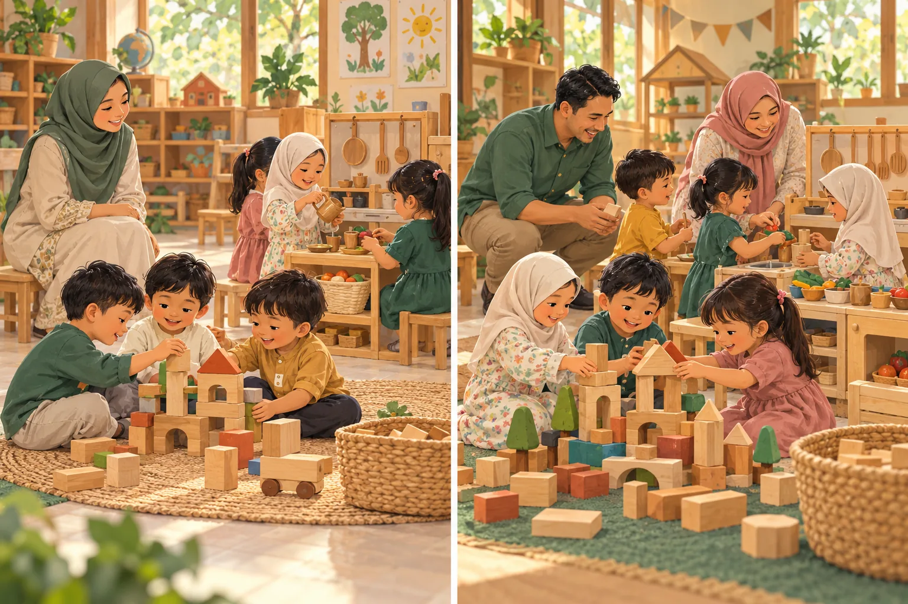
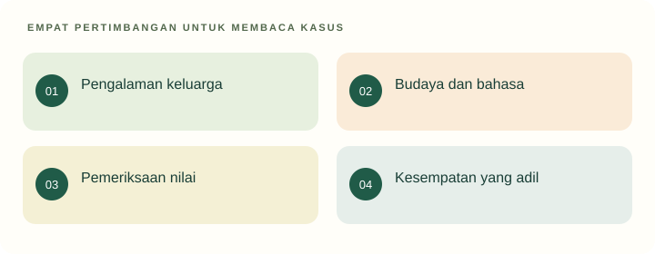

Tujuan pembelajaran
- Menjelaskan pendidikan sebagai pewarisan sekaligus peninjauan nilai budaya.
- Mengidentifikasi stereotip dan hambatan partisipasi.
- Merancang komunikasi budaya yang menghargai keluarga dan hak anak.
Apakah semua kebiasaan budaya harus dipertahankan dalam pendidikan?

Di kelas, anak laki-laki diarahkan ke permainan bangunan dan anak perempuan ke dapur-dapuran. Guru mengatakan itu kebiasaan masyarakat. Seorang anak ingin mencoba area yang berbeda tetapi ditertawakan teman.
- Pembatasan pilihan apa yang tampak?
- Bagaimana keluarga dapat dilibatkan tanpa disalahkan?
Temukan persoalan konseptual
Sebelum membaca penjelasan, pisahkan kejadian yang dinyatakan dalam kasus dari dugaan Anda. Gunakan pertanyaan berikut untuk menyiapkan analisis.
- Apa tujuan pendidikan yang sedang dipertaruhkan?
- Pengalaman apa yang dialami anak, dan informasi apa yang belum tersedia?
- Konsep atau jenis sumber apa yang diperlukan untuk menilai tindakan pendidik?
Telaah kebudayaan

Kebudayaan menjadi konteks pengalaman yang dapat dihargai sekaligus ditelaah. Praktik diperiksa melalui makna, akses anak, dan dampaknya; tidak semua kebiasaan perlu dipertahankan atau ditolak sekaligus.
Menghargai konteks budaya berjalan bersama pemeriksaan terhadap kesempatan dan martabat anak.
Pendidikan dalam kebudayaan
Bahasa, cerita, perayaan, pekerjaan, dan cara berinteraksi membentuk pengalaman anak. Pendidikan mewariskan pengetahuan serta nilai, tetapi juga membuka ruang menilai kembali kebiasaan. Pewarisan bukan pemindahan tanpa pertanyaan. Mahasiswa perlu memeriksa dampak suatu kebiasaan terhadap martabat, keselamatan, dan kesempatan belajar.
Misalnya, cerita lokal dapat menjadi bahan percakapan yang dekat dengan pengalaman keluarga. Namun, bagian cerita yang merendahkan kelompok tertentu perlu dibahas atau diadaptasi secara bertanggung jawab. Menghargai budaya tidak mensyaratkan menyetujui semua praktik yang mengatasnamakannya.
Keragaman sebagai sumber pengalaman
Keluarga berbeda dalam bahasa, pekerjaan, pola pengasuhan, kondisi ekonomi, dan akses layanan. Guru perlu mengenal variasi tersebut tanpa menjadikan satu keluarga wakil tunggal suatu kelompok. Hindari anggapan bahwa cara keluarga dominan di kelas otomatis paling tepat. Perspektif ekologis membantu membaca hubungan konteks dan pengalaman (Bronfenbrenner, 1979).
Usulan kegiatan: anak berbagi cerita rutinitas keluarga melalui gambar atau benda yang tidak berharga mahal. Pendidik menjaga agar perbedaan tidak berubah menjadi perbandingan status. Tidak semua anak wajib membuka informasi pribadi yang tidak ingin dibagikan.
Stereotip dan kesempatan belajar
Stereotip adalah penyederhanaan ciri kelompok yang diterapkan kepada individu. Dalam pendidikan, akibatnya dapat berupa pembatasan kesempatan sebelum kemampuan atau minat anak diketahui. Pada kasus bermain, pembagian berdasarkan gender mengurangi kesempatan mencoba peran serta keterampilan.
Rancangan yang lebih terbuka memberi akses ke area berdasarkan minat, kapasitas, dan keselamatan. Guru dapat mencontohkan bahasa yang tidak mengejek pilihan teman. Perubahan aturan perlu disertai pendampingan interaksi; hanya membuka pintu area belum cukup bila ejekan tetap berlangsung.
Dialog dengan keluarga
Ketika nilai lembaga dan kebiasaan keluarga berbeda, mulai dari tujuan bersama dan fakta yang dapat dibicarakan. Jelaskan kesempatan belajar yang hendak diberikan serta dengarkan kekhawatiran keluarga. Hindari bahasa yang menyimpulkan keluarga tertinggal atau tidak peduli. Namun, dialog tidak berarti mengabaikan hak dan perlindungan anak.
Sebagai latihan, mahasiswa dapat menyusun dua alternatif kegiatan yang tetap menghormati keragaman. Jelaskan apa yang dapat disesuaikan dan apa yang harus dijaga, seperti keselamatan serta larangan merendahkan. Dasar perlindungan anak memberi batas yuridis; rincian kegiatan merupakan keputusan pedagogis yang perlu ditinjau dalam konteks.
Kembali ke kasus
Alasan budaya tidak cukup membenarkan pembatasan dan ejekan. Guru perlu membuka akses, mendampingi respons teman, dan menjelaskan manfaat variasi pengalaman kepada keluarga tanpa menyatakan semua tradisi buruk.
Analisis ini merupakan contoh penalaran pedagogis. Pada situasi nyata, keputusan memerlukan informasi tentang anak dan konteks lembaga.
Satu kasus, dua cara merespons
Gunakan teori pada materi di atas untuk memeriksa alasan dan akibat yang mungkin muncul. Alternatif ini merupakan contoh telaah, bukan resep untuk semua anak.
Mewariskan pembatasan
Menentukan jenis permainan berdasarkan jenis kelamin.
Kesempatan anak mencoba peran dan keterampilan menjadi terbatas.
Membuka pilihan dengan dialog
Memberi akses pada semua sudut bermain dan berdiskusi dengan keluarga tentang tujuan keterampilan.
Amati minat dan partisipasi tanpa memaksa pilihan tertentu.
Dari melihat ke beralasan
Rancang satu kalimat kepada keluarga untuk menjelaskan manfaat akses bermain yang setara.
Buka contoh penalaran setelah mencoba
Contoh: “Kami memberi semua anak kesempatan mencoba memasak dan membangun agar mereka dapat mengembangkan kerja sama serta keterampilan merawat kehidupan sehari-hari.” Dengarkan pula pandangan keluarga.
Dasar konsep dan sitasi: baca materi inti serta referensi unit ini. Adegan dan alternatif merupakan penerapan ilustratif penyusun.
Latihan terbimbing
Pisahkan tiga hal pada kasus: kebiasaan masyarakat, keputusan guru, dan dampak pada kesempatan anak. Tulis satu kalimat yang menghormati keluarga sekaligus menjelaskan alasan membuka semua area bermain.
Latihan mandiri
Pilih cerita atau permainan lokal. Jelaskan potensi belajar, bagian yang perlu dikritisi, adaptasi yang diusulkan, dan cara mempertahankan penghargaan terhadap sumber budaya.
- Konsep digunakan dengan tepat dan dijelaskan hubungannya dengan kasus.
- Fakta dipisahkan dari interpretasi; sumber mendukung jenis klaimnya.
- Tindakan konkret, menghargai anak, dan memiliki cara peninjauan.
Lihat pembahasan
Memahami konteks dan menilai praktik berdasarkan nilai serta hak anak.
Penghargaan dan kritik dapat berjalan bersama. Fokus kritik adalah praktik beserta dampaknya, bukan merendahkan identitas kelompok.
Refleksi calon pendidik
Harapan saya terhadap anak mana yang berasal dari stereotip, bukan pengamatan terhadap individu?
Catatan hanya disimpan di peramban ini. Tidak dikirim kepada dosen.
Intisari dan tindak lanjut
- Pendidikan mewariskan budaya sekaligus membuka ruang meninjau praktiknya.
- Stereotip dapat membatasi kesempatan sebelum minat anak diketahui.
- Dialog budaya tetap menjaga hak, keselamatan, dan partisipasi anak.
Uji kembali pemahaman di atas melalui latihan mandiri. Jika alasan Anda belum menghubungkan konsep dan tindakan, baca ulang submateri terkait sebelum menandai selesai.
Referensi dan bacaan pendamping
Sumber untuk klaim khusus disebut pada uraian. Buku pendamping tidak dikutip langsung. Jenis dan batas penggunaan setiap rujukan dijelaskan di bawah.
- Bronfenbrenner, U. (1979). The ecology of human development: Experiments by nature and design. Harvard University Press.Kerangka ekologis klasik. Jangan menyamakan buku ini dengan seluruh perkembangan model bioekologis berikutnya.
- Republik Indonesia. (2014). Undang-Undang Nomor 35 Tahun 2014 tentang Perubahan atas Undang-Undang Nomor 23 Tahun 2002 tentang Perlindungan Anak.Dibaca bersama UU dasar dan perubahan berikutnya, termasuk UU 17/2016. Materi ini berfokus pada hak anak, bukan penetapan sanksi pidana.
- National Association for the Education of Young Children. (2022). Developmentally appropriate practice in early childhood programs serving children from birth through age 8 (4th ed.).Buku utama pendamping. Cakupan sampai usia 8 tahun berbeda dari definisi yuridis PAUD Indonesia; tidak direproduksi di portal.